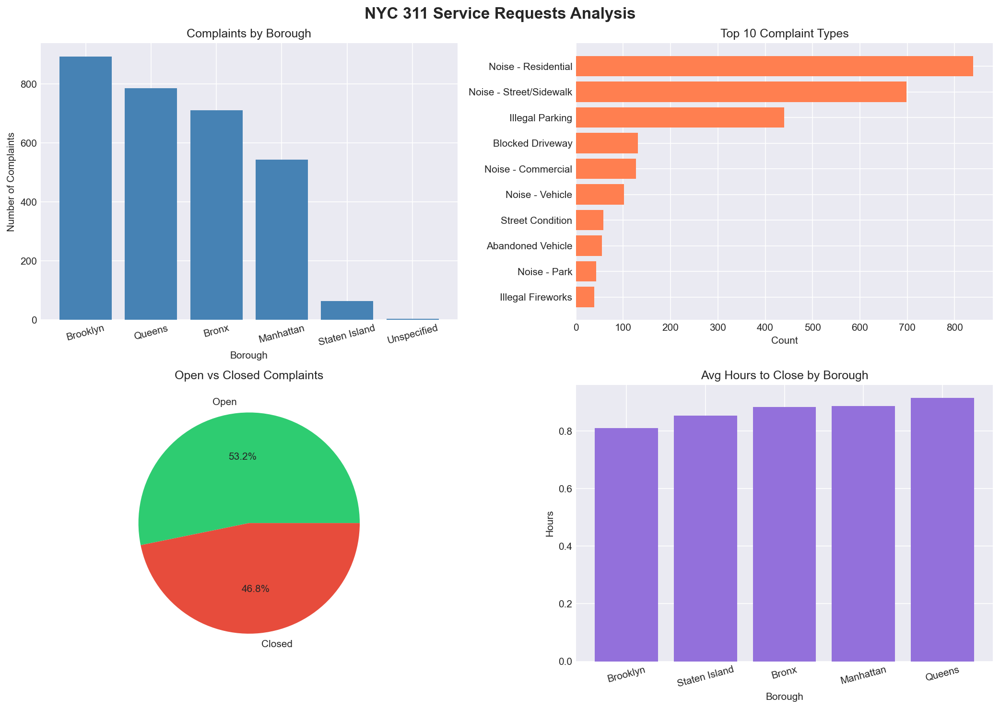

NYC 311 Data Pipeline
CompleteAn end-to-end data pipeline that pulls New York City 311 service requests (noise complaints, potholes, and more) and turns them into clean tables ready for analysis.
- Pulls raw 311 data and loads it into a PostgreSQL database
- Runs on a schedule with an Airflow DAG, so new data comes in on its own
- Uses dbt to clean and reshape the data into analysis-ready models
- Explores trends in a Jupyter notebook
